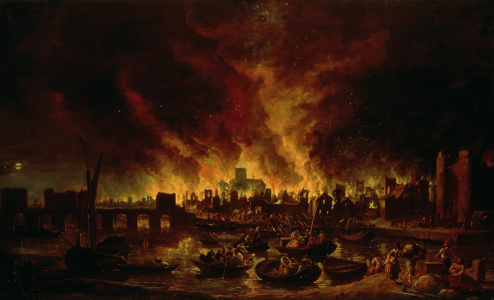

Parte 5
Capire Londra
Duemila anni in dieci date, un re e la sua famiglia, un maghetto con gli occhiali, e cosa ordinare al pub.
Capire LondraParte 5
224
Prima di partire
Da leggere in aereo
Londra è più divertente quando sai perché le cose sono lì: perché una colonna è alta proprio 202 piedi, perché la bandiera sul palazzo cambia, perché un binario si chiama 9¾.
Questo capitolo non ha orari né biglietti: quelli sono nei capitoli dei quartieri e nella Guida pratica. Qui ci sono le storie che stanno dietro ai luoghi, da leggere in volo o la sera in hotel. Molte pagine sono pensate per le ragazze: le date con un dettaglio da raccontare, chi è chi nella famiglia reale, i set di Harry Potter, le parole da usare al bar.
In questo capitolo
- 1La storia in 10 date, dai Romani all'incoronazione di Carlo III, ognuna con un posto dove vederla.
- 2La famiglia reale oggi: chi è chi, dove vivono, come capire se il re è in casa.
- 3La Londra di Harry Potter, dal binario 9¾ al ponte dei Mangiamorte.
- 4Cosa assaggiare: dal fish and chips allo scone, e come si mangia.
- 5Piccolo dizionario, con la pronuncia dei nomi che ingannano.
- 6Londra in numeri e un quiz per l'ultima sera.
Come leggere le date
Ogni data ha un luogo che si vede ancora oggi, con il capitolo in cui lo trovate. Molti sono gratis e di passaggio: il muro romano è davanti alla metro di Tower Hill, la colonna del Grande incendio a due passi dal Tamigi.
Capire LondraParte 5
225
La storia in 10 date
Dai Romani alla regina guerriera
1
47 d.C. circa · Nasce Londinium
Da vedere: il muro romano a Tower Hill, il tempio di Mitra sotto la City
I Romani sbarcano in Britannia nel 43 e pochi anni dopo costruiscono un ponte di legno sul Tamigi, nel punto in cui il fiume si attraversa meglio. Intorno al ponte nasce Londinium, un porto di mercanti. Verso il 200 la città si chiude in un muro di pietra lungo circa 3 chilometri, con cinque porte: un bel pezzo è ancora in piedi accanto all'uscita della metro di Tower Hill.
2
60-61 d.C. · Boudicca brucia la città
Da vedere: la sua statua sul carro, all'angolo di Westminster Bridge
Boudicca è la regina degli Iceni, una tribù dell'est dell'isola. Guida una grande rivolta contro i Romani e i suoi guerrieri danno fuoco a Londinium, che era nata da poco più di dieci anni. Alla fine l'esercito romano riprende il controllo e la città rinasce. La statua di bronzo sul Tamigi fu messa al suo posto nel 1902, diciassette anni dopo la morte dello scultore.
Lo sapevi?
Sotto un palazzo di uffici della City, al 12 di Walbrook, c'è il London Mithraeum, un tempio romano del dio Mitra costruito verso il 240. Si visita gratis da martedì a domenica; il lunedì è chiuso.
Capire LondraParte 5
226
La storia in 10 date
3
1066 · Arriva Guglielmo il Conquistatore
Da vedere: la Torre Bianca, nella Tower of London (capitolo "Tower, City e Aldgate")
Guglielmo, duca di Normandia, vince la battaglia di Hastings e il giorno di Natale del 1066 si fa incoronare a Westminster Abbey: da allora quasi tutti i re inglesi sono stati incoronati lì. Per tenere a bada i londinesi fa costruire sul fiume una fortezza di pietra portata dalla Normandia, la White Tower, finita verso il 1100. Si chiama "bianca" perché per secoli fu imbiancata a calce.
4
1209 · Il ponte con le case sopra
Da vedere: il London Bridge di oggi, nello stesso punto, tra la City e Southwark
Dopo 33 anni di lavori è finito il primo London Bridge di pietra. Per più di seicento anni è l'unico ponte della città, coperto di case e negozi alti fino a sette piani. All'ingresso dal lato di Southwark si esponevano su picche le teste dei traditori. Fu demolito negli anni Trenta dell'Ottocento.
"London Bridge is falling down"
La filastrocca che i bambini inglesi cantano da secoli parla proprio di questo ponte, rifatto e riparato di continuo. Il London Bridge di oggi, quello piatto e grigio, è del 1973; quello con le torri che tutti fotografano è Tower Bridge, del 1894.
Capire LondraParte 5
227
La storia in 10 date
5
1605 · La Congiura delle polveri
Da vedere: il Parlamento (capitolo "Westminster e South Bank")
Un gruppo di cattolici nasconde 36 barili di polvere da sparo sotto la Camera dei Lord, per far saltare in aria il re Giacomo I. Nella notte tra il 4 e il 5 novembre le guardie trovano Guy Fawkes accanto ai barili. Ancora oggi, prima che il re apra il Parlamento, le guardie del re, gli Yeomen of the Guard, ispezionano per tradizione le cantine; e ogni 5 novembre gli inglesi accendono falò e fuochi d'artificio, la Bonfire Night.
6
1666 · Il Grande incendio
Da vedere: il Monument, la colonna di 311 gradini (capitolo "Tower, City e Aldgate")
Il 2 settembre prende fuoco il forno di Thomas Farriner, il panettiere del re, in Pudding Lane. In quattro giorni il fuoco distrugge circa 13.000 case, 87 chiese e la vecchia cattedrale di St Paul's, e lascia senza casa 130.000 persone. I morti registrati furono pochissimi, ma i poveri spesso non venivano contati.
Lo sapevi?
Il Monument è alto 202 piedi, circa 61 metri: esattamente la distanza tra la colonna e il punto di Pudding Lane dove cominciò l'incendio. Se cadesse dalla parte giusta, la punta toccherebbe il forno.
Capire LondraParte 5
228
La storia in 10 date
7
1851 · La Grande Esposizione
Da vedere: i musei di South Kensington, costruiti con i soldi dell'Esposizione
In Hyde Park sorge in otto mesi il Crystal Palace, un palazzo di ferro e vetro con dentro le invenzioni di tutto il mondo. Dal 1° maggio al 15 ottobre arrivano più di sei milioni di visitatori, un terzo degli abitanti della Gran Bretagna di allora. Con il guadagno nascono il V&A, lo Science Museum e il Natural History Museum.
8
1863 · La prima metropolitana del mondo
Da vedere: Farringdon e Baker Street, sulla linea dell'hotel; il London Transport Museum a Covent Garden
Il 10 gennaio 1863 apre la Metropolitan Railway, poco più di cinque chilometri sotto terra da Paddington a Farringdon. I treni vanno a vapore, e i passeggeri viaggiano nel fumo. Il primo giorno la prendono tra le 30.000 e le 40.000 persone.
"Spend a penny"
Si racconta che alla Grande Esposizione ci fossero i primi bagni pubblici a pagamento, a un penny. Che sia vero o no, gli inglesi per dire "vado in bagno" dicono ancora I'm going to spend a penny.
Capire LondraParte 5
229
La storia in 10 date
9
1940-41 · Il Blitz
Da vedere: le Churchill War Rooms (capitolo "Westminster e South Bank"), St Paul's
Dal 7 settembre 1940 i bombardieri tedeschi colpiscono Londra per 57 notti di fila, e continuano fino al maggio 1941. La notte del 29 dicembre, il "secondo Grande incendio", il fuoco circonda St Paul's, ma la cupola resta in piedi tra il fumo. La foto di Herbert Mason, St Paul's Survives, diventa il simbolo della città che resiste.
10
2023 · Carlo III incoronato
Da vedere: Westminster Abbey e la sedia dell'incoronazione
L'8 settembre 2022 muore Elisabetta II, a 96 anni, dopo 70 anni di regno. Il 6 maggio 2023 suo figlio Carlo III viene incoronato a Westminster Abbey, il quarantesimo sovrano incoronato lì, sulla stessa sedia di legno usata dal 1308. Undici anni prima Londra era diventata l'unica città ad avere ospitato tre volte le Olimpiadi estive: 1908, 1948 e 2012.
Capire LondraParte 5
230
La famiglia reale
Il re e la sua famiglia
Il Regno Unito ha un re che regna ma non governa: firma le leggi, ma le decide il Parlamento.
Carlo III è nato il 14 novembre 1948 a Buckingham Palace ed è diventato re l'8 settembre 2022, a 73 anni. Principe di Galles dal 1958, quando aveva nove anni, aspettò il trono più di sessant'anni. Da giovane ha imparato a pilotare jet e elicotteri nella RAF, l'aviazione militare. Accanto a lui c'è la regina Camilla, sposata nel 2005.
Il compleanno ufficiale del re si festeggia a giugno, con la parata di Trooping the Colour; quello vero è a novembre.
Lo sapevi?
Il re ha diritto su tutti i cigni bianchi senza anello che nuotano in acque aperte, un privilegio che risale al XII secolo. Ogni luglio, sul Tamigi, li contano uno per uno: si chiama Swan Upping.
Capire LondraParte 5
231
La famiglia reale
Chi è chi
William e Catherine, principe e principessa di Galles (al centro), in visita in Svezia.
L'ordine di successione
- 1William, principe di Galles, nato nel 1982. Il figlio maggiore del re e di Diana. Sposato con Catherine (Kate) dal 2011.
- 2George, nato il 22 luglio 2013: un giorno sarà re. A febbraio 2027 ha 13 anni, come una delle nostre ragazze.
- 3Charlotte, nata nel 2015.
- 4Louis, nato nel 2018 al St Mary's Hospital di Paddington.
- 5Harry, il fratello minore di William. Dal 2020 non fa più il "lavoro" di reale e vive in California con Meghan e i figli, Archie e Lilibet, sesto e settima in linea.
Poi ci sono i fratelli del re: la principessa Anna e Edoardo, duca di Edimburgo, che lavorano ancora per la Corona; e Andrea, ottavo nella linea di successione, che oggi compare senza titoli reali.
Che lavoro fa un reale?
I working royals inaugurano ospedali, visitano scuole e reggimenti, ricevono capi di Stato. Non governano: il re firma le leggi, ma le decidono il Parlamento e il governo.
Capire LondraParte 5
232
La famiglia reale
Dove vivono, e come capire se il re è in casa
- Il re
- Clarence House, sul Mall, accanto a St James's Palace, dal 2005. Buckingham Palace resta la sede delle cerimonie: è in restauro fino a marzo 2027, e a giugno 2026 il re ha deciso che non ci andrà a vivere. Fuori Londra: il castello di Windsor e Sandringham.
- William
- Dal 2025 con la famiglia a Forest Lodge, nel grande parco di Windsor. A Londra ha l'ufficio e un appartamento a Kensington Palace.
- Da vedere
- Buckingham Palace e Kensington Palace si visitano in parte; Clarence House e St James's Palace si guardano da fuori.
I segni del re
La bandiera. Se su Buckingham Palace sventola lo stendardo reale, rosso, giallo e blu con i leoni e l'arpa, il re è presente. Se c'è la Union Jack, non c'è. Lo stendardo non va mai a mezz'asta: un sovrano c'è sempre.
Le cassette delle lettere. Su quelle rosse c'è la sigla del sovrano di quando sono state messe: ER per Elisabetta, GR per i Giorgi, VR per Vittoria. Quelle nuove portano CIIIR, Carlo III Re: la prima è stata messa nel 2024, e a Londra sono ancora rare. Una gara per le ragazze: chi trova la più vecchia, e chi la prima con la C.
Le monete. Da dicembre 2023 escono con il profilo di Carlo, girato a sinistra; Elisabetta guardava a destra. Valgono tutte e due: controllate il resto.
L'inno è cambiato
Con un re, l'inno si canta God Save the King, non più the Queen.
Capire LondraParte 5
233
La Londra di Harry Potter
Il binario 9¾
Nei libri si prende il treno per Hogwarts correndo contro il muro tra i binari 9 e 10 di King's Cross. Nella stazione vera c'è un carrello che ci entra a metà.
Il carrello è nell'atrio di King's Cross, accanto all'Harry Potter Shop, che apre lun-sab 8-22 e dom 9-20. La foto con il telefono è gratis: si sceglie la sciarpa della propria casa e un addetto la fa svolazzare al momento giusto. Quella professionale si paga.
Lo sapevi?
Nei film le scene del binario 9¾ sono state girate tra i binari 4 e 5. Il carrello nel muro è arrivato solo nel 2012, per i fan. Accanto c'è St Pancras, la stazione in mattoni rossi su cui vola la Ford Anglia nella Camera dei segreti.
Il trucco
La coda è più corta prima delle 8:30 o la sera tardi; il punto foto chiude circa un'ora prima del negozio. King's Cross è sulla Hammersmith & City line, la stessa dell'hotel: da Aldgate East si arriva senza cambi.
Capire LondraParte 5
234
La Londra di Harry Potter
I set in città
1
Leadenhall Market
City · 15-20 minuti a piedi dall'hotel · capitolo "Tower, City e Aldgate"
Nella Pietra filosofale Hagrid e Harry ci passano per andare al Paiolo Magico. L'ingresso del locale era un negozio in Bull's Head Passage: oggi è un ottico con la porta blu, al numero 42.
2
Millennium Bridge
Tra St Paul's e la Tate Modern · capitolo "St Paul's e Bankside"
All'inizio del Principe mezzosangue i Mangiamorte lo fanno crollare nel Tamigi. Quello vero è un ponte pedonale d'acciaio, e regge benissimo.
3
Westminster e Great Scotland Yard
Whitehall · capitolo "Westminster e South Bank"
Nell'Ordine della Fenice Harry e il signor Weasley passano i tornelli della metro di Westminster; al Ministero della Magia si entra da una cabina telefonica in Great Scotland Yard, una traversa di Whitehall. La cabina era finta.
4
Piccadilly Circus e Lambeth Bridge
Centro · gratis
Nei Doni della Morte Harry, Ron ed Hermione si materializzano nel traffico di Piccadilly Circus e risalgono Shaftesbury Avenue. Nel Prigioniero di Azkaban il Nottetempo, l'autobus viola a tre piani, passa stretto tra due bus rossi su Lambeth Bridge.
5
E poi…
Australia House, sullo Strand, è l'interno della Gringott: non si visita. Claremont Square, a Islington, ha ispirato Grimmauld Place. Al London Zoo c'è la casa dei rettili dove Harry parla al serpente: nella teca vera, dice lo zoo, viveva un mamba nero.
Capire LondraParte 5
235
La Londra di Harry Potter
Gli studi, il teatro e i negozi
6
Warner Bros. Studio Tour
Leavesden · treno da Euston a Watford Junction (circa 20 minuti, vale il contactless), poi navetta gratuita
Gli studi dove sono stati girati gli otto film: la Sala Grande, Diagon Alley, l'Hogwarts Express vero. A febbraio 2027 c'è Hogwarts House Spirit, con gli stendardi delle quattro case e il Cappello Parlante animato (dal 23 gennaio, date da confermare). Serve una giornata. Prezzi 2027: adulti dai 16 anni £61, 5-15 anni £48: per noi 8 £462. Solo online e con orario.
7
Harry Potter and the Cursed Child
Palace Theatre, Shaftesbury Avenue · metro Leicester Square
Harry adulto e suo figlio Albus, con la magia fatta dal vivo. Da ottobre 2026 è uno spettacolo solo, di 2 ore e 55 minuti con l'intervallo (prima erano due). Mar-sab alle 19, mer e sab anche alle 13, dom alle 14:30; il lunedì no. Da £25. Ogni venerdì, nell'app TodayTix, si estraggono 40 biglietti a £40 per la settimana dopo.
8
I negozi
Oxford Street e Soho
Dal 4 novembre 2026 al 134-140 di Oxford Street c'è il più grande negozio ufficiale del Regno Unito: una Diagon Alley con un drago sopra la Gringott, un Nottetempo a grandezza vera e il Paiolo Magico, dove si beve la Burrobirra. A due passi, al 157 di Wardour Street, la House of MinaLima espone la grafica dei film, dalla Gazzetta del Profeta alle lettere di Hogwarts: gratis, tutti i giorni 11-18:45.
Capire LondraParte 5
236
Cosa assaggiare
A tavola come gli inglesi
1
Fish and chips
Dove: Poppies, Hanbury Street, 10 minuti dall'hotel · Rock & Sole Plaice, Covent Garden, dal 1871
Merluzzo o eglefino in pastella con patatine spesse, sale e aceto di malto. Il pesce fritto arrivò nel Cinquecento con gli ebrei fuggiti da Spagna e Portogallo; si dice che il primo negozio l'abbia aperto Joseph Malin verso il 1860. In guerra non fu mai razionato.
2
Sunday roast
Dove: nei pub, la domenica a pranzo · in otto si prenota
Arrosto di manzo, pollo o agnello, patate al forno, verdure e la salsa gravy. Con il manzo arriva lo Yorkshire pudding, una pastella gonfia e croccante. Nel 2008 la Royal Society of Chemistry ha stabilito che uno vero deve essere alto almeno 10 centimetri.
3
Pie and mash
Dove: M. Manze, 87 Tower Bridge Road, dal 1902 · lun-gio 10:30-17:45, dom fino alle 14:45
Il pasto dei lavoratori dell'East End: un pasticcio di carne macinata, purè e il liquor, una salsa verde al prezzemolo senza alcol. Chi ha coraggio aggiunge le anguille in gelatina.
4
Beigel
Dove: Beigel Bake, 159 Brick Lane, 10 minuti dall'hotel · aperto 24 ore su 24
A Brick Lane si scrive così. Il classico è il salt beef beigel, manzo salmistrato caldo con senape, sui £7. Perfetto la prima sera o per uno spuntino a mezzanotte.
Capire LondraParte 5
237
Cosa assaggiare
Colazione e tè delle cinque
5
Full English breakfast
Uova, bacon, salsicce, fagioli in salsa di pomodoro, pomodori e funghi, pane tostato e a volte il black pudding, il sanguinaccio. Basta fino a sera.
6
Afternoon tea
L'ha reso di moda, nei primi anni Quaranta dell'Ottocento, Anna, duchessa di Bedford: la cena arrivava così tardi che alle quattro si faceva portare tè e qualcosa da mangiare, e poi invitò le amiche. Oggi è un'alzata a tre piani: tramezzini senza crosta, scones, dolcetti.
7
Scones e crumpets
Lo scone è un panino dolce da tagliare a metà e coprire di panna rappresa e marmellata. Il crumpet è una frittella spugnosa piena di buchi, da tostare e spalmare di burro.
Prima la panna o la marmellata?
Nel Devon prima la panna e poi la marmellata; in Cornovaglia il contrario. Nel 2018 il National Trust ha dovuto chiedere scusa per una pubblicità con lo scone "sbagliato". Scegliete da che parte stare.
Da provare al supermercato
Il sausage roll di Greggs, la catena nata nel 1939; la Cornish pasty, che per legge deve essere preparata in Cornovaglia; il Marmite, crema di lievito dal 1902: o la ami o la odi, dice la pubblicità. E le patatine al gusto aceto o cocktail di gamberi.
Capire LondraParte 5
238
Piccolo dizionario
Le parole che servono
Cheers"cìirs". Salute, ma anche grazie e ciao.
Sorry"sòri". Scusi: si dice di continuo, anche quando è l'altro a urtarvi.
Queue"kiù". La coda: si rispetta sempre.
Loo, toilet"lù", "tòilet". Il bagno.
Chips / crispsPatatine fritte / patatine in busta.
Takeaway"téik-auéi". Da asporto. Eat in or take away? Qui o da portare via?
Tap water"tap uòter". Acqua del rubinetto: al ristorante è gratis.
BillIl conto. Can we have the bill, please?
Quid"kuìd". Una sterlina, nel linguaggio di tutti i giorni.
Lift, flatAscensore, appartamento.
Tube"tiùb". La metropolitana.
Way outUscita, nella metro.
Mind the gap"màind de gap". Attenzione allo spazio tra treno e banchina.
Top upRicaricare la carta Oyster o il telefono.
Frasi pronte
A table for eight, please. Un tavolo per otto, per favore.
Could I have…? Potrei avere…? (più gentile di I want)
Is service included? Il servizio è compreso?
Which way to…? Da che parte per…?
La regola d'oro
In Inghilterra please, thank you e sorry si dicono molto più che da noi. Un "Could I have a hot chocolate, please?" vale più di qualsiasi accento perfetto.
Capire LondraParte 5
239
Piccolo dizionario
Nomi che ingannano
Leicester Square"lèster scuèr", non "laicester"
Southwark"sàdhek"
Greenwich"grènich", la w non si legge
Thames"tèms", il Tamigi
Marylebone"màlibon"
Holborn"hòubn"
Borough"bàra"
Gloucester Road"glòster ròud"
Bermondsey"bèmondsi"
Tottenham Court Rd"tòtnam cort ròud"
Aldgate"òlgheit", la nostra fermata
Modi di dire
Fancy a cuppa?Ti va una tazza di tè?
You alright?Tutto bene? È solo un saluto: si risponde Yeah, you?
Lovely!Perfetto, grazie: lo dice anche il cassiere.
Raining cats and dogsPiove a catinelle (letteralmente: piovono cani e gatti).
Bob's your uncleEd è fatta! Alla fine di una spiegazione.
Innit?Vero? Alla fine di una frase, tra i ragazzi di Londra.
Taking the mickeyPrendere in giro.
KnackeredDistrutto dalla stanchezza. Dopo la terza giornata a piedi.
Pronuncia scritta all'italiana, per avvicinarsi: l'accento cade sulla vocale con l'accento grafico.
Capire LondraParte 5
240
Londra in numeri
Grande, vecchia, piena di gente
9milioni circa di abitanti nella Grande Londra, su 1.572 km².
33municipi: 32 borough più la City, che ha ancora un suo sindaco, il Lord Mayor, e una sua polizia.
272stazioni della metropolitana, su 11 linee e 402 km. Fino a 5 milioni di viaggi al giorno.
58metri e mezzo sotto terra: Hampstead, la stazione più profonda.
60metri: la scala mobile di Angel, la più lunga della rete.
300e più lingue parlate nelle scuole di Londra.
25.000strade da imparare a memoria per prendere la licenza da tassista: è l'esame chiamato The Knowledge, e ci vogliono tre o quattro anni. Esiste dal 1865.
7metri e più: quanto si alza e si abbassa il Tamigi con la marea, a Londra.
9.000bus rossi circa, su 675 linee.
6corvi, più uno di riserva, sempre alla Torre di Londra: la leggenda dice che, se se ne andassero, cadrebbe il regno.
Lo sapevi?
Il Mind the gap fu registrato nel 1968 da un tecnico del suono, Peter Lodge, perché l'attore scelto voleva i diritti. A Embankment, sulla Northern line, si sente ancora un'altra voce, quella di Oswald Laurence: la riportarono su richiesta della vedova.
Capire LondraParte 5
241
Il quiz dell'ultima sera
Quanto avete capito Londra?
- Quanti gradini ha il Monument?
a) 111 · b) 311 · c) 611
- Come si chiama la campana dentro la Elizabeth Tower?
a) Big Ben · b) Great Tom · c) Old Bailey
- Che cosa vuol dire "Mind the gap"?
a) Pensa alla pausa · b) Attenzione allo spazio · c) Ricordati la strada
- In che anno è nata la metropolitana?
a) 1863 · b) 1901 · c) 1925
- Che bandiera c'è su Buckingham Palace quando il re è in casa?
a) La Union Jack · b) Lo stendardo reale · c) Nessuna
- Chi viene prima nella successione al trono?
a) Charlotte · b) Louis · c) Harry
- Come si pronuncia Leicester Square?
a) Laicester · b) Lester · c) Leichester
- Dove è nato il Grande incendio del 1666?
a) Pudding Lane · b) Baker Street · c) Brick Lane
Risposte: 1b, 2a, 3b, 4a, 5b, 6a, 7b, 8a.
Capire LondraParte 5
242
Crediti fotografici
Le foto di questo capitolo
Foto da Wikimedia Commons, pubblicate con licenze Creative Commons o in pubblico dominio. Mappe: Esri, HERE, Garmin e i contributori di OpenStreetMap. Linee della metro: OpenStreetMap.
- x_apertura: Lieve Verschuier, Public domain, commons.wikimedia.org/wiki/File:Verschuier-fire.jpg
- x_boudica: Leimenide, CC BY 2.0, commons.wikimedia.org/wiki/File:Statue_of_Boadicea_by_Westminster_Station,_London.jpg
- tower: Bob Collowan, CC BY-SA 3.0, commons.wikimedia.org/wiki/File:Tower_of_London_viewed_from_the_River_Thames.jpg
- x_bridge: Claude de Jongh, Public domain, commons.wikimedia.org/wiki/File:Claude_de_Jongh_-_View_of_London_Bridge_-_Google_Art_Project.jpg
- monument_col: Fred Romero from Paris, France, CC BY 2.0, commons.wikimedia.org/wiki/File:London_-_Monument_to_the_Great_Fire_of_London.jpg
- x_crystal: J. McNeven, Public domain, commons.wikimedia.org/wiki/File:Crystal_Palace_interior.jpg
- x_metro1863: Unknown authorUnknown author, Public domain, commons.wikimedia.org/wiki/File:Metropolitan_Railway,_Baker_Street_Station.jpg
- x_blitz: Herbert Mason, Public domain, commons.wikimedia.org/wiki/File:St_Paul's_Survives.jpg
- w_abbey: Prioryman, CC BY-SA 4.0, commons.wikimedia.org/wiki/File:Westminster_Abbey_west_front_March_2015.jpg
- x_charles: Senedd Cymru / Welsh Parliament from Wales, CC BY 2.0, commons.wikimedia.org/wiki/File:The_Presentation_of_a_Motion_of_Condolence_to_His_Majesty_King_Charles_III,_16_September_2022_Cyflwyno_Cynnig_o_Gydymdeimlad_â’i_Fawrhydi_y_Brenin,_16_Medi_2022_(53217665429).jpg
- x_william: Frankie Fouganthin, CC BY-SA 4.0, commons.wikimedia.org/wiki/File:Prince_William_and_Duchess_Kate_of_Cambridge_visits_Sweden_01.jpg
- x_standard: Magnus D, CC BY 2.0, commons.wikimedia.org/wiki/File:Buckingham_Palace_Royal_Standard_Flag.jpg
- x_platform: Bert Seghers, CC0, commons.wikimedia.org/wiki/File:Platform_9_3-4_(King's_Cross_station,_London,_2014).jpg
- leadenhall: It's No Game, CC BY 2.0, commons.wikimedia.org/wiki/File:Leadenhall_Market_(50374627401).jpg
- x_millennium: Telemaque MySon, CC BY-SA 3.0, commons.wikimedia.org/wiki/File:Millennium_Bridge_London.jpg
- x_hogwarts: Karen Roe, CC BY 2.0, commons.wikimedia.org/wiki/File:Hogwarts_model_studio_tour.jpg
- x_fishchips: Harmonide, CC BY-SA 4.0, commons.wikimedia.org/wiki/File:Fish_and_chips_(Londres).jpg
- x_roast: Acabashi, CC BY-SA 4.0, commons.wikimedia.org/wiki/File:A_roast_lamb_dinner_at_Black_Horse_Inn,_Nuthurst,_West_Sussex_England.jpg
- x_piemash: Secretlondon, CC BY-SA 3.0, commons.wikimedia.org/wiki/File:Pie_mash_and_liquor_Manze_Bermondsey.jpg
- beigel: Bex Walton from London, England, CC BY 2.0, commons.wikimedia.org/wiki/File:Beigel_Bake,_Brick_Lane_(33936265604).jpg
- x_tea: Ji-Elle, CC BY-SA 4.0, commons.wikimedia.org/wiki/File:London-Liberty-Afternoon_tea_(2).jpg